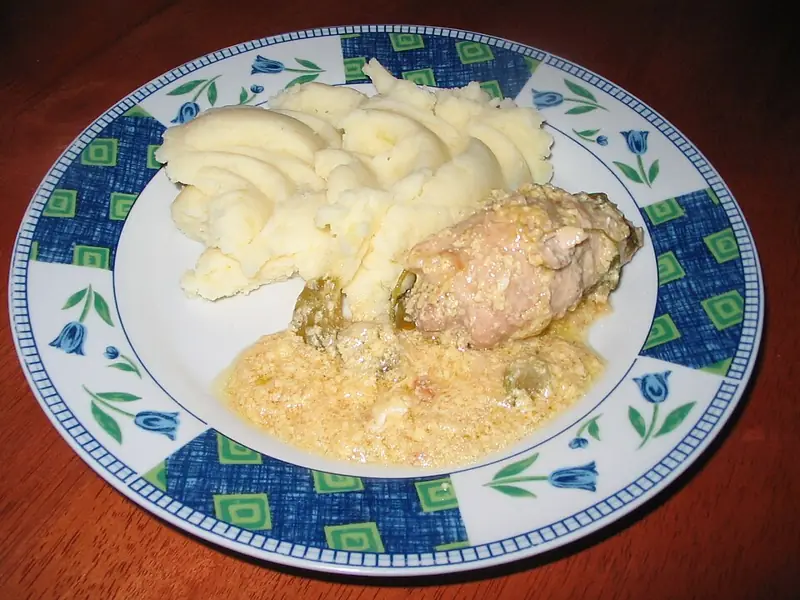

Фото: Kagor, CC BY-SA 3.0

Зразы из вчерашнего пюре с грибами
Картофельные лепёшки из остатков пюре с начинкой из жареных грибов с луком
45 мин4 порц.377 ккал на порциюБ 10 · Ж 18 · У 45Русская кухня
Продукты на 4 порц.
- Картофель отварной / пюре (остался)600 г
- Яйцо куриное1 шт
- Мука пшеничная2 ст. л.
- Шампиньоны200 г
- Лук репчатый1 шт
- Панировочные сухари40 г
- Растительное масло4 ст. л.
- Соль2 щеп.
- Перец чёрный молотыйпо вкусу
- Укроп по желаниюпо вкусу
Как готовить
- Мелко нарежьте грибы и лук. Обжарьте на 1 ст. л. масла на среднем огне 10 минут, пока сок не испарится. Посолите, поперчите, остудите.
- Холодное пюре смешайте с яйцом и мукой до плотной массы, которая не липнет к влажным рукам.
- Возьмите 2 ст. л. пюре, расплющите в лепёшку на ладони, положите 1 ч. л. грибов в центр и защипните края, придав форму пирожка.
- Обваляйте зразы в сухарях.
- Жарьте на разогретом масле на среднем огне по 3-4 минуты с каждой стороны до румяной корочки. Подавайте со сметаной и укропом.
Совет. Пюре должно быть холодным из холодильника: тёплое не держит форму. Вместо грибов подойдут остатки фарша, рубленое яйцо с луком или сыр.